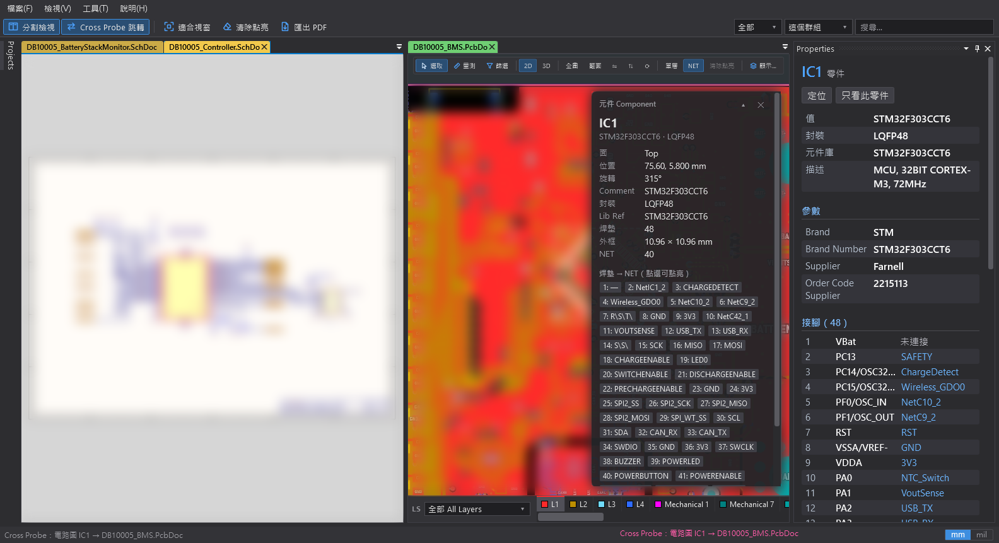
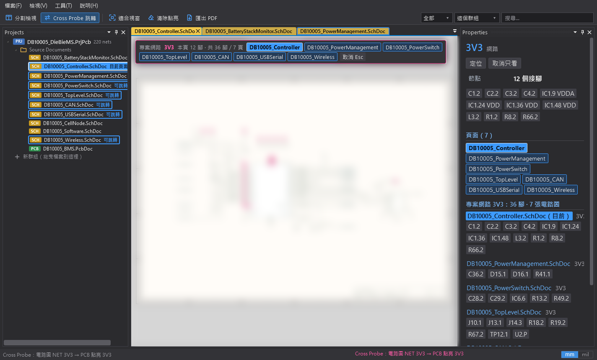
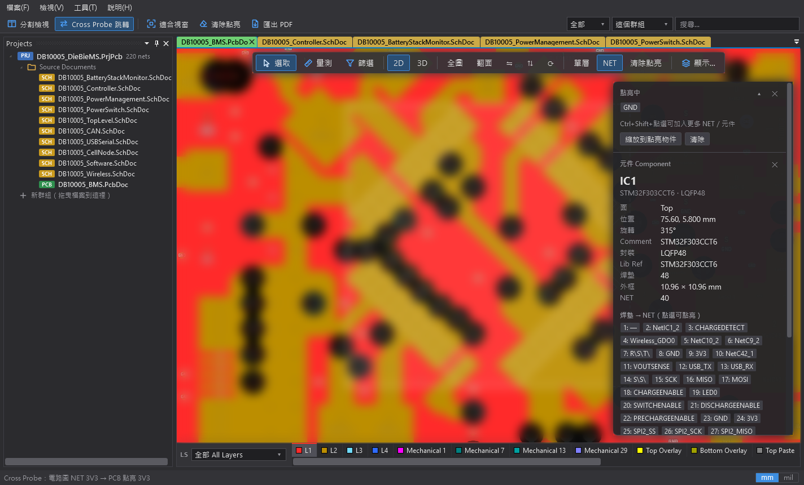
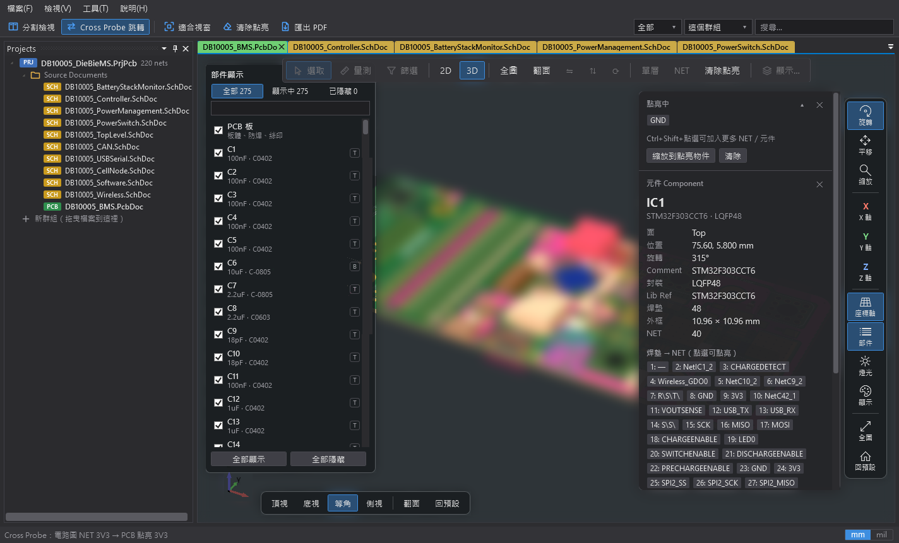

1快速上手
Herald PCB Reader 讀取 Altium Designer 的 .PrjPcb、.SchDoc、.PcbDoc，也能開 KiCad（.kicad_sch、舊版 .sch）與 Eagle（XML .sch）電路圖。全部功能都在本機執行，不需要網路，也不需要安裝 Altium Designer。
- 開啟專案：在檔案總管雙擊
.PrjPcb，或在程式裡按 Ctrl+O。專案的電路圖與 PCB 會一起載入。 - 點電路圖上的零件：PCB 會選取同一顆零件並放大；反過來點 PCB 上的零件，電路圖會切到它所在的圖紙。
- 按住 Alt 點電路圖上的網路：同一個網路在其他圖紙與 PCB 上一起點亮，上方列出網路經過的所有頁面。
- 按 F12 進入分割檢視：左邊電路圖、右邊 PCB，兩邊同時看。
2開啟檔案
- 檔案 → 開啟專案 / 檔案…（Ctrl+O）：可一次選多個檔案。
- 檔案 → 開啟資料夾…（Ctrl+Shift+O）：開啟資料夾裡的專案與檔案。
- 拖放：把檔案或資料夾拖進視窗。
- 雙擊：安裝後
.SchDoc/.PcbDoc/.PrjPcb預設用本程式開啟。雙擊單一 SchDoc 或 PcbDoc 時，如果同資料夾有列出它的.PrjPcb，會把整個專案一起開。 - 檔案 → 最近開啟：最近用過的檔案與專案。
- 檔案 → 重新載入全部檔案：檔案在 Altium 裡改過、存檔後，用這個重新讀取。
下次開啟時恢復工作階段
關閉程式時會記下開著的分頁（順序、分割檢視、兩邊顯示中的分頁與作用中的分頁），下次開啟時原樣恢復，不會把專案裡每個檔案都打開。其他檔案照樣列在 Projects 面板，點兩下即可開啟。自訂群組、加進專案的檔案、面板的寬度與自動隱藏狀態也都會記住。
程式一啟動就在背景開始讀取上次的檔案（或雙擊開啟的檔案），和建立視窗同時進行，所以重新開啟時分頁很快就回來，不需要另外的快取。
3介面導覽

選單與工具列（上方）
分割檢視、Cross Probe 跳轉、適合視窗、清除點亮、匯出 PDF；右側是搜尋框。
Projects（左）
專案、自訂群組與 Free Documents；每個專案的 Source Documents 同時列出電路圖與 PCB。
Navigator（左，另一分頁）
目前專案的元件、網路與 BOM，可複製成 Markdown 表格。預設關閉，從 檢視 → 面板：Navigator 打開。
文件分頁（中）
SCH 電路圖分頁是黃色、PCB 分頁是綠色，分頁緊靠在一起（仿 AD19）；目前的分頁較亮，關閉用的 ✕ 出現在它的右端（滑鼠移到其他分頁上也會出現）。可拖曳重排或拖到另一邊。
Properties（右）
電路圖上選取的零件、網路或框選的零件；沒選取時顯示文件摘要。單獨看 PCB 時會自動讓開。
Messages 與狀態列（下）
載入與編譯訊息（預設關閉，從 檢視 → 面板：Messages 打開；有檔案開不了時會自動出現）；狀態列顯示座標、Cross Probe 結果，右下角切換 mm / mil（或按 Q）。
4面板與自動隱藏
- 每個面板標題列的圖釘可切換「停靠」與「自動隱藏」。自動隱藏的面板收在視窗邊緣成為標籤，點標籤（或滑鼠停在上面）就會展開，寬度和停靠時一樣。
- 展開後，點到面板以外的地方（或滑鼠移開、面板失去焦點），面板會以約 0.4 秒的動畫收回側邊。在面板裡面點選（例如點 Projects 裡的檔案、按右鍵開選單）不會讓它收回；收回途中再點一次標籤可以讓它停住。
- 拖曳面板邊緣可調整寬度；寬度與自動隱藏狀態會在下次開啟時恢復。
- 關掉的面板可從 檢視 → 面板 叫回來。Navigator 與 Messages 預設是關閉的；打開或關掉哪些面板會記住，下次開啟照舊。
- 在電路圖上雙擊零件會叫出 Properties（停在電路圖，不會跳到 PCB）：如果 Properties 設成自動隱藏，雙擊後會展開並停住；這時再點別的零件，Properties 改顯示那顆零件；取消選取（點空白處、按 Esc、改點網路、換到別的電路圖）就自動收回。
5電路圖
| 操作 | 作用 |
|---|---|
| 點選 | 選取零件或網路（會 Cross Probe 到 PCB）。開著「Cross Probe 跳轉」且不是分割檢視時，切到 PCB 分頁會等過 Windows 的雙擊時間（約 0.5 秒）才發生，才分得出你是要點一下還是雙擊。 |
| 左鍵拖曳 | 框選零件：左→右拖曳選完全在框內的零件，右→左拖曳選碰到框的零件。 |
| 雙擊零件 | 選取並放大到這顆零件，叫出 Properties；停在電路圖，不會跳到 PCB。 |
| Alt（或 Ctrl）＋點選 | 只看這個網路：其他東西變淡，同專案其他圖紙與 PCB 一起點亮。詳見下一節。 |
| 滾輪／PgUp PgDn | 縮放（Shift＋滾輪水平捲動）。 |
| 右鍵或中鍵拖曳 | 平移。 |
| F | 適合視窗。 |
| G | 顯示／隱藏格線。 |
| Esc | 取消選取與「只看」。 |
| 右鍵（不拖曳） | 選單：適合視窗、縮放到所選、只看此網路／零件、清除選取、格線。 |
- 一個檔案有多張圖紙時，下方會出現圖紙分頁。
- 檢視 → 電路圖配色：Altium（檔案原色）、黑色、黑白。檢視 → 電路圖字體大小 或 設定 裡的「電路圖文字大小」（50–250%）調整文字大小。
- Properties 會列出零件的值、封裝、元件庫、參數與每支接腳的網路；點網路名稱即可選取該網路。
6Alt＋點選網路

- 電路圖上方的網路標示列顯示網路名稱、本頁接腳數、總接腳數與頁數，並列出網路經過的所有頁面（包含目前這一頁；一個檔案有多張圖紙時逐頁列出）。
- 目前的頁面以 藍底深色粗體 反白，其他頁面是 藍框。點其他頁面就切過去並標示同一個網路（沒開著的分頁會自動開啟）；點目前頁面則縮放到這個網路。
- Projects 面板在含有這個網路的檔案旁標示「可跳轉」，目前的檔案標示「目前頁面」並反白。
- 同群組的 PCB 會點亮相同的網路。比對以接腳（位號＋腳號）為主、名稱為輔，自動命名或經 Port 改名的網路也找得到。
- 按 Esc 或標示列的「取消」結束。
7PCB 2D

上方 Active Bar
| 按鈕 | 作用 |
|---|---|
| 選取 | 點選與框選物件。 |
| 量測（M） | 點兩點量距離：吸附焊墊／導通孔中心與導線端點；Shift 鎖定 0°/45°/90°，Ctrl 吸附銅箔邊緣。 |
| 指示（P） | 指示標記（point finger）：游標變成一隻手指，左鍵在板上留下同方向的手指標記，指尖固定在那個位置；空白鍵以指尖為圓心順時針轉 45°，Ctrl＋左鍵拿掉一個，Esc 清除全部（再按一次離開）；左鍵拖曳或右鍵／中鍵拖曳平移。標記在螢幕上永遠和游標一樣大，平移、縮放、旋轉、翻面都留在原位，全圖時也有深色底、白色光暈與向外擴散的白圈，方便找到元件後把多個位置指出來，再看著整片板子去重工或修改。左下角面板可調大小 10–300%（位置與方向不變）；每次開啟都從 -45° 開始。 |
| 篩選 | 選擇能被點到的物件種類（元件、焊墊、導通孔、導線、圓弧、鋪銅、區域、填充、文字、禁布）；Alt＋點項目只選該類。 |
| 2D / 3D | 切換 2D 與 3D（2 / 3）。 |
| 全圖、翻面、鏡射、旋轉 | 全圖（F）、翻面看底面（B）、左右／上下鏡射（X / Y）、旋轉 90°（R）。 |
| 單層 | 只顯示目前層（Shift+S），+ / - 切換目前層。 |
| NET | 在焊墊、導通孔、導線上標示 NET 名稱（N）。 |
| 清除點亮 | 取消所有點亮（Shift+C）。 |
| 顯示… | 圖層顯示與顏色、其他物件亮度、NET 名稱，以及在焊墊上顯示 pin 腳編號（預設關閉）。 |
點選與點亮
- 點選以畫面上看得到的為準：游標正下方最上層的焊墊／導線優先，其次是附近最近的，再來是文字與元件本體，最後才是鋪銅。被上層鋪銅蓋住的東西點不到（穿孔焊墊與導通孔除外）。
- Shift＋點選加入或移出所選；拖曳框選（左→右完全在框內、右→左碰到就選；Shift 加選、Ctrl 減選）。
- 點亮 NET：Ctrl＋點選或雙擊導線、焊墊、鋪銅，點亮整個 NET（同 NET 的鋪銅一起亮）；Shift 可同時點亮多個。Alt＋點選還會把 NET 標到電路圖上（實驗功能，可在設定關閉）。
- 焊墊 pin 腳編號以淡黃色顯示；和 NET 名稱同時開啟時，長焊墊顯示「編號 NET」，方形焊墊上下兩行。
其他
- 下方 LS 圖層組合選單與彩色圖層分頁：切換顯示的圖層組合與目前層。
- 右上角資訊小卡：量測結果、點亮中的 NET、所選物件的資料（元件的每個焊墊與 NET 都能點來點亮）；可收合或關閉。
- 座標以 PCB 檔的原點顯示，單位可切換 mm / mil（右下角或 Q）。
8PCB 3D

- 右側工具列：旋轉、平移、縮放、繞 X／Y／Z 軸旋轉、座標軸、部件、燈光、顯示、全圖、回預設。左鍵依所選工具操作，右鍵平移，滾輪縮放。
- 左下視角：頂視、底視、等角、側視、翻面、回預設（0 頂視、I 等角、S 側視、Home 回預設）。
- 部件清單：全部／顯示中／已隱藏，逐一勾選顯示或隱藏；選取元件後按 H 也能隱藏。
- 燈光：整體亮度、環境光、光源方位與仰角、頭燈。
- 點元件會在右側小卡顯示資料，不會跳到電路圖。
- 元件外形：PCB 檔內嵌的 3D 模型——STEP（.step／.stp）與 Parasolid（文字 .x_t、二進位 .x_b）——會照實際外形與顏色顯示（繞線的電感、共模電感與變壓器、連接器等），擺放的位置、旋轉與底面翻轉都依 Altium 的設定。第一次切到 3D 時會在背景讀取模型，讀完前先以外框顯示。
- Altium 自己的圓柱與球體本體會依其 X／Y／Z 旋轉擺放（例如立著的壓敏電阻圓盤、橫躺的保險絲），擠出本體依外框與高度顯示。
- 沒有內嵌在檔案裡（只連結外部檔案）或讀不出來的模型，仍以 Altium 記錄的外框與高度顯示；沒有 3D 本體的元件以半透明方塊代替。
- 顯示 → 「使用元件的 STEP 3D 模型」：關閉後改以外框顯示，3D 檢視較省記憶體（元件很多的板子約省 80 MB）。
9Cross Probe（電路圖 ⇄ PCB）
- 電路圖 → PCB：點零件（或框選多個）→ PCB 選取並放大；Alt＋點網路 → PCB 點亮同一個 NET。
- PCB → 電路圖：點元件或它的焊墊 → 電路圖切到含該元件的圖紙並放大。
- 多個專案同時開啟時，依
.PrjPcb判斷對應的板子；沒有專案的零散檔案可以放進自訂群組互相查詢。 - Cross Probe 跳轉（工具列按鈕或 工具 選單）：開啟時會切換到另一邊的文件分頁並放大；關閉時另一邊只在背景更新選取與點亮，不切換分頁、不換圖紙、不縮放。分割檢視時兩邊都看得到，通常不需要切換。
- 從電路圖點選元件時，同時點亮 PCB 上的元件（設定，預設關閉）：打開後在電路圖點零件（或框選多個），PCB 除了選取，還會把這些零件點亮、其他東西變淡；取消電路圖的選取時一起取消。反方向（在 PCB 點元件）不會讓電路圖變成「只看」。
- 開啟專案時自動分割檢視可在 工具 選單或設定裡打開。
10專案與群組
- Projects 面板裡，PRJ 是專案，底下的 Source Documents 列出專案的電路圖與 PCB；沒有專案的檔案放在 Free Documents。
- 和 AD 一樣，點一下已經開著分頁的檔案就切到那個分頁；還沒開的檔案點兩下開啟。
- 自訂群組讓零散的電路圖與 PCB 互相 Cross Probe：選取檔案（Ctrl / Shift 可複選）→ 右鍵「加入群組」→「新群組…」，或直接把檔案拖曳到「新群組」那一列、某個群組或專案上。拖到 Free Documents 即移出群組。
- 重新命名群組：在群組上按右鍵「重新命名…」，或選取群組後按 F2。名稱不能和其他群組相同。
- .PrjPcb 本身列出的檔案隨專案開啟，不能移出；手動加進專案的檔案可以。
- 專案右鍵選單：分割檢視、開啟全部文件、網路範圍（Automatic / Flat / Hierarchical / Global / Strict Hierarchical）、編譯資訊、關閉專案、在檔案總管中顯示。
- 檔案右鍵選單：開啟、加入群組、移出群組、關閉、複製路徑、在檔案總管中顯示。
11搜尋與 Navigator
搜尋（Ctrl+F）
- 搜尋位號、值、封裝或網路名稱；也可以直接用工具列右側的搜尋框。
- 分類：全部／零件／NET；範圍：這個頁面／這個群組／全部檔案。在電路圖上只搜電路圖，在 PCB 上只搜 PCB。
- 結果依檔案分組，點一下就跳過去。
Navigator 面板
- 元件：目前專案的所有零件，點一下定位。
- 網路：所有網路；「複製網路表（Markdown）」與「跨圖紙網路」可複製成表格。
- BOM：「BOM 合併」或「逐顆」，「複製 BOM（Markdown）」貼到文件或試算表。
12匯出 PDF
在電路圖上按 Ctrl+P（或 檔案 → 匯出電路圖 PDF…），輸出向量 PDF：
- 範圍：目前圖紙、此電路圖全部圖紙、整個專案（或群組）。
- 紙張：自動統一、A4、A3、各頁原尺寸。
- 色彩：彩色、黑白。
- 完成後開啟PDF：勾選時，存檔後直接用預設的 PDF 程式打開（會記住上次的選擇）。
頁面依各張圖標題欄的頁次（Sheet Number）排列，而不是專案列出檔案的順序；沒有頁次的圖紙排在最後，保持原本的順序。
13設定（Ctrl+,）
| 分類 | 項目 |
|---|---|
| 字體大小 | 面板預設字體、Properties 標題與內容、電路圖文字大小（50–250%，和 檢視 → 電路圖字體大小 同一個設定）。 |
| 單位 | PCB 長度單位 mm / mil（座標、量測與資訊小卡）。 |
| PCB 量測 | 量測文字的大小與顏色（8 種預設色或自訂 #RRGGBB，附即時預覽）。 |
| Cross Probe | Alt＋點電路圖 NET 時點亮 PCB；Alt＋點 PCB NET 時標示電路圖（實驗功能）；Cross Probe 時切換到對應的文件分頁；從電路圖點選元件時，同時點亮 PCB 上的元件；開啟專案時自動分割檢視。 |
| 電路圖 | 顯示元件的值（Value）與參數（位號一律顯示）。 |
14快捷鍵
通用
| F1 | 使用說明 |
| Ctrl+O ／ Ctrl+Shift+O | 開啟檔案／資料夾 |
| Ctrl+P | 匯出電路圖 PDF |
| Ctrl+F | 搜尋 |
| Ctrl+, | 設定 |
| Ctrl+W | 關閉文件分頁 |
| F12 | 分割檢視 |
| Q | 切換 mm / mil |
| F2 | 重新命名所選的自訂群組（Projects 面板） |
電路圖
| Alt / Ctrl＋點選 | 只看同一網路（同專案其他圖紙與 PCB 一起點亮） |
| 滾輪、PgUp / PgDn | 縮放 |
| F | 適合視窗 |
| G | 格線 |
| Shift+C | 清除所有點亮 |
| Esc | 取消 |
PCB 2D
| Ctrl＋點選、雙擊 | 點亮 NET／元件（Shift 加選） |
| Alt＋點選 | 點亮 NET 並標到電路圖 |
| M | 量測 |
| P | 指示標記（開啟後：空白鍵 轉 45°、Esc 清除全部） |
| F | 全圖 |
| B ／ X Y ／ R | 翻面／鏡射／旋轉 |
| N | NET 名稱 |
| Shift+S、+ - | 單層模式、切換目前層 |
| 2 / 3 | 2D / 3D |
| Shift+C | 清除點亮 |
| Esc | 取消 |
PCB 3D
| 左鍵／右鍵／滾輪 | 依工具旋轉、平移、縮放／平移／縮放 |
| O P Z | 旋轉／平移／縮放工具 |
| H | 隱藏所選元件 |
| Home ／ 0 ／ I ／ S | 回預設／頂視／等角／側視 |
| A | 座標軸 |
15安裝與疑難排解
安裝與更新
- 執行安裝檔即可，只裝給目前使用者，不需要系統管理員權限，也不必另外安裝 .NET。
- 已經裝過時直接執行新的安裝檔，選「修復／更新」；設定、最近開啟的檔案、群組與檔案關聯都會保留。
- 安裝位置：
%LOCALAPPDATA%\Programs\Herald PCB Reader。
檔案關聯
安裝後 .SchDoc / .PcbDoc / .PrjPcb 預設用本程式開啟，檔案總管的圖示是 SCH PCB PRJ。
常見問題
- Windows 跳出「Windows 已保護您的電腦」：安裝檔沒有數位簽章，按「其他資訊」→「仍要執行」。
- 電路圖與 PCB 沒有互相查詢：確認兩者在同一個專案或同一個自訂群組；零散檔案請先放進同一個群組。
- 網路沒有連到其他圖紙：看 Properties 的「為什麼沒有連到其他圖紙」，或在專案右鍵改「網路範圍」。
- 程式發生錯誤或突然關閉：錯誤記在
%APPDATA%\AltiumReader2\crash.log，回報問題時請附上這個檔案。
16資安、授權與商標
資安重點（供資安審核參考）
- 完全離線：程式不連網、不上傳任何資料、沒有自動更新或遙測；只讀取使用者開啟的檔案。
- 只用目前使用者的權限：安裝在
%LOCALAPPDATA%\Programs\Herald PCB Reader，不需要系統管理員權限，登錄檔只寫入HKEY_CURRENT_USER（檔案關聯與解除安裝資訊）；設定、說明檔與錯誤記錄都在%APPDATA%\AltiumReader2，PDF 只寫到使用者選的位置。解除安裝只刪除它自己安裝的檔案。 - 只開檔案、不執行檔案：電路圖與 PCB 只被讀取與顯示，不執行其中任何內容。損毀或刻意改造的檔案會顯示「無法開啟」，不會讓程式當掉、卡住或耗盡記憶體（讀檔器會檢查磁區大小與鏈結，限制在檔案實際的大小內）；KiCad／Eagle 的 XML 不處理 DTD，也不讀取外部資源。
- 程式之間的溝通只限本人：再次雙擊檔案時，交給已開啟視窗的管道只允許同一個 Windows 使用者連線。
- 測試介面預設關閉：自動化測試用的本機連接埠只有以
--automation-port加上--automation-token啟動時才開，只接受 127.0.0.1 上帶正確權杖的要求，網頁無法從瀏覽器操作它。 - 執行環境：內含 .NET 10（長期支援版，支援到 2028 年 11 月）的最新安全性更新 10.0.14，不依賴電腦上另外安裝的 .NET。
- 安裝檔與程式沒有數位簽章；公司若有程式碼簽章憑證，建議由 IT 簽章後再發佈。
著作權與授權
Herald PCB Reader：Copyright © 2026 Johnny.ch.Tsai。本程式是自由軟體，依 GNU 通用公共授權條款第 3 版（GPL-3.0）發佈：
- 可以自由使用、複製、研究、修改與散布。散布本程式或修改後的版本時，必須同樣以 GPL-3.0 提供，並讓收到的人可以取得完整的原始碼。
- 不提供任何擔保，包括可售性或特定用途適用性的默示擔保。
- 介面用的 AvalonDock 是 Microsoft Public License（Ms-PL）授權，自由軟體基金會認為它和 GPL 不相容，所以著作權人依 GPL 第 7 條另外允許：本程式與 AvalonDock 結合後的作品可以照常散布。
- 原始碼：每個版本的發行 zip 都附上該版本完整的原始碼（
HeraldPcbReader_v版本_source.zip），包括建置與安裝程式的腳本；也公開在 github.com/vip3310495-Johnny/HeraldPcbReader。 - 授權聲明見 NOTICE.txt（說明 → 授權條款（GPL-3.0）），GPL-3.0 全文見 LICENSE.txt（說明 → GPL-3.0 全文）；安裝資料夾裡也各有一份。中文說明僅供參考，以英文的 GPL 原文為準。
程式使用的第三方元件依各自的授權提供：.NET 執行環境（MIT）、AvalonDock 與其 VS2013 主題（Ms-PL）、Helix Toolkit（MIT）、SkiaSharp 與其內含的 Skia 等函式庫（MIT／BSD 等）、3D 模型三角化採用的 earcut 演算法（ISC，Mapbox）、NSIS 安裝程式（zlib）。各授權與聲明的全文見 THIRD-PARTY-NOTICES.txt（說明 → 授權與第三方元件，安裝資料夾裡也有一份）。
說明中的截圖來自網路上公開、但沒有註明授權條款的範例專案，所以截圖裡的電路圖與板子內容都已模糊處理，只呈現程式的介面。
商標
Altium、Altium Designer、KiCad、EAGLE 等名稱為其各自所有者的商標。本程式為獨立開發的檢視工具，與這些公司及專案無關，也未經其認可；文中提到它們只是為了說明可以開啟的檔案格式。